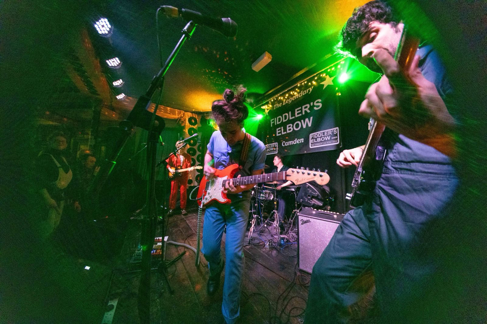
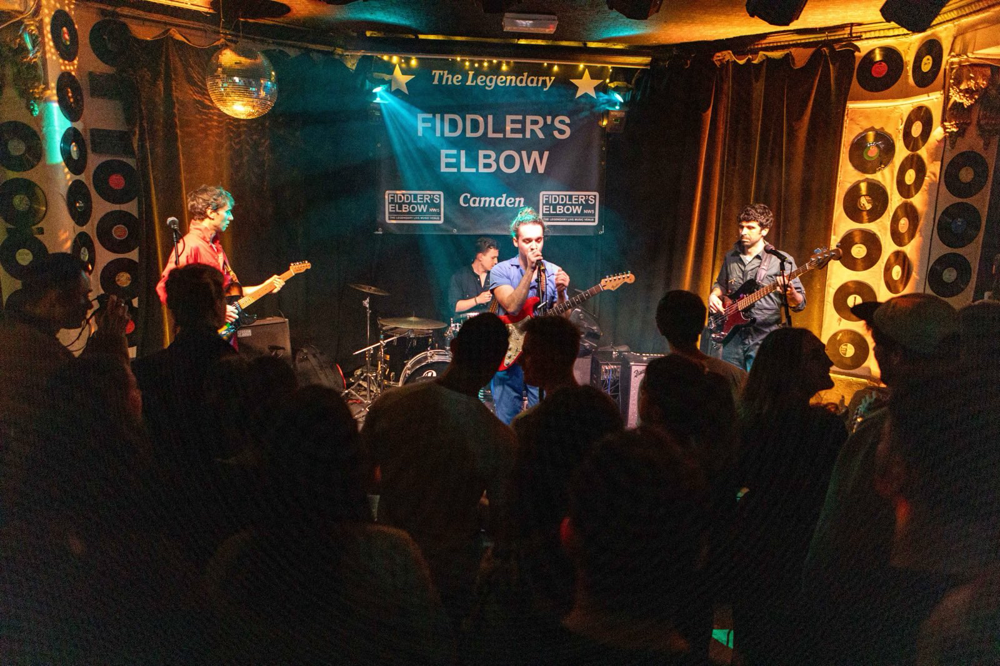
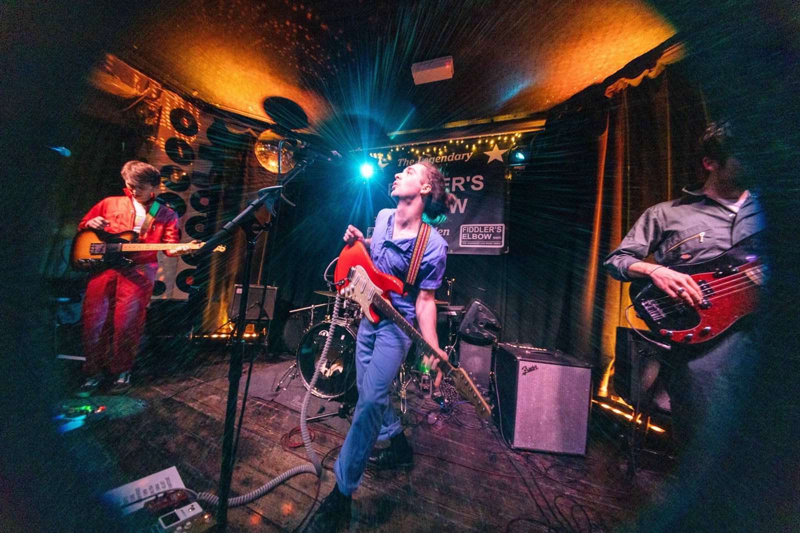
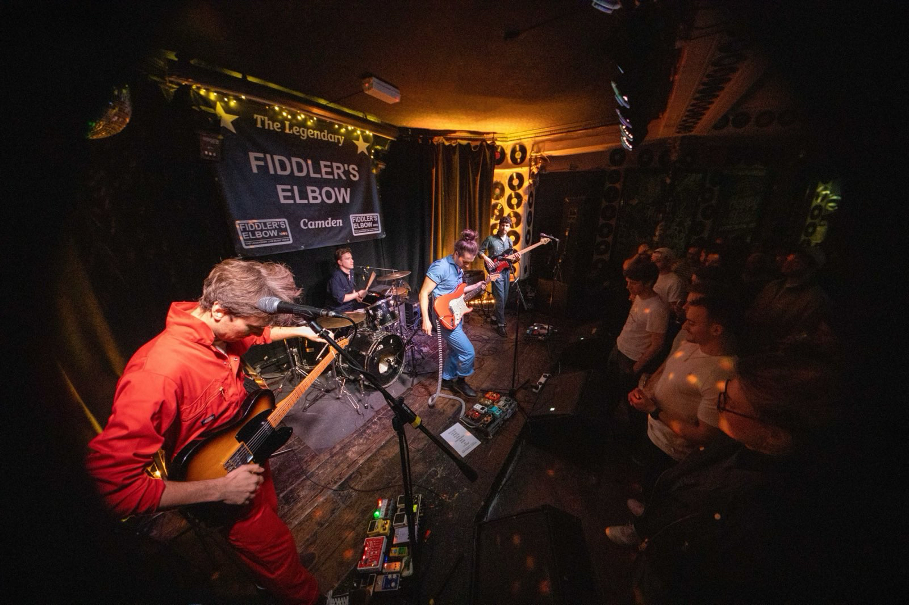
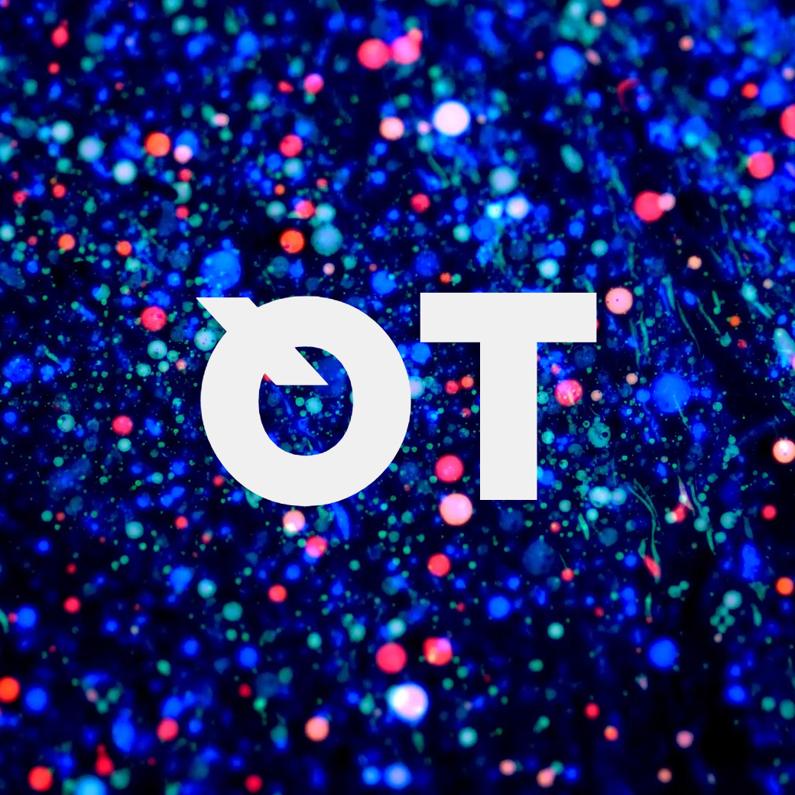

<!DOCTYPE html>
<html lang="en">

<head>
    <meta charset="UTF-8">
    <title>Quiet Tongues • Four Piece Indie Outfit from South London</title>

    <link rel="icon" href="assets/favicons/favicon.ico" sizes="32x32">
    <link rel="icon" href="assets/favicons/icon.svg" type="image/svg+xml">
    <link rel="apple-touch-icon" href="assets/favicons/apple-touch-icon.png"><!-- 180×180 -->
    <link rel="manifest" href="assets/favicons/site.webmanifest">

    <link rel="stylesheet" href="css/modern-normalize.css" />
    <link rel="stylesheet" href="css/style.css" />

    <!-- Global site tag (gtag.js) - Google Analytics -->
    <script async src="https://www.googletagmanager.com/gtag/js?id=G-JEFJPSLLD7"></script>
    <script>
    window.dataLayer = window.dataLayer || [];
    function gtag(){dataLayer.push(arguments);}
    gtag('js', new Date());

    gtag('config', 'G-JEFJPSLLD7');
    </script>

</head>
</html>

<body>

    <section id="epk-welcome" class="epk-central-column">
        <header>
            <h1>Quiet Tongues</h1>
            <h2>EPK</h2>
        </header>
    </section>

    <section id="bio" class="epk-central-column">
        <h2 class="epk-h2">About</h2>
        <p>Four piece indie outfit Quiet Tongues are the most lifelike AI music robots on south London’s music scene.</p>
        <p>Drawing from shoegaze soundscapes, bludgeoning riffs of desert rock and the melodic vocals of singer songwriters, Quiet Tongues embody a direct but introspective brand of indie rock.</p>
        <p>Clashing the existential worries of modern life with the diversity of what comes with living in it, QT shape these themes into vibrant brushes of contemplation and celebration.</p>
    </section>

    <section id="epk-singles" class="epk-central-column">
        
        <header>
            <h2 class="epk-h2">Singles</h2>
        </header>
       
        <article>
            <h3 class="epk-h3">She's Velvet<br>21/07/2023</h3>
            <iframe style="border-radius:12px" src="https://open.spotify.com/embed/track/626yIES8sACVT6RiJOwLzR?utm_source=generator" width="100%" height="152" frameBorder="0" allowfullscreen="" allow="autoplay; clipboard-write; encrypted-media; fullscreen; picture-in-picture" loading="lazy"></iframe>
        </article>

        <article>
            <h3 class="epk-h3">This Water is Wet<br>23/09/2022</h3>
            <iframe style="border-radius:12px" src="https://open.spotify.com/embed/track/2qeuLXMJoJpprIuRMvxh5s?utm_source=generator" width="100%" height="152" frameBorder="0" allowfullscreen="" allow="autoplay; clipboard-write; encrypted-media; fullscreen; picture-in-picture" loading="lazy"></iframe>
        </article>

        <article>
            <h3 class="epk-h3">Ennui<br>17/06/2022</h3>
            <iframe style="border-radius:12px" src="https://open.spotify.com/embed/track/0v7fKFGZEj5R4EqfC3lPvQ?utm_source=generator" width="100%" height="152" frameBorder="0" allowfullscreen="" allow="autoplay; clipboard-write; encrypted-media; fullscreen; picture-in-picture" loading="lazy"></iframe>
        </article>            

    </section>

    <section id="epk-upcoming-releases" class="epk-central-column">

        <header>
            <h2 class="epk-h2">Scheduled Releases</h2>
        </header>

        <article>
            <h3 class="epk-h3">Unnamed LP<br>Summer 2025</h3>
        </article>

    </section>

    <section id="epk-music-videos" class="epk-central-column">
        <h2 class="epk-h2">Music Videos</h2>

        <article>
            <h3 class="epk-h3">She's Velvet<br>21/07/23</h3>
            <p><a href="https://www.youtube.com/watch?v=GcnBtNgr8Lc" target="_blank">Watch on YouTube</a></p>
        </article>

        <article>
            <h3 class="epk-h3">Ennui<br>15/06/22</h3>
            <p><a href="https://www.youtube.com/watch?v=gYOaeV60MsI" target="_blank">Watch on YouTube</a></p>
        </article>

        <article>
            <h3 class="epk-h3">Ennui [Lyrics Video]<br>01/07/22</h3>
            <p><a href="https://www.youtube.com/watch?v=p3-M1yO5BuQ" target="_blank">Watch on YouTube</a></p>
        </article>

    </section>

    <section id="epk-socials" class="epk-central-column">
        <header>
            <h2 class="epk-h2">Socials</h2>
        </header>
        <ul>
            <li><a href="https://www.facebook.com/quiettongues" target="_blank">facebook</a></li>
            <li><a href="https://www.instagram.com/quiettongues" target="_blank">instagram</a></li>
            <li><a href="https://twitter.com/quiettongues" target="_blank">x</a></li>
            <li><a href="https://youtube.com/channel/UCVaW6CZJKD59bj-7UGsgaVg" target="_blank">youtube</a></li>
            <li><a href="https://open.spotify.com/artist/1PwaBuuX5yaO0nyuyxYTuB" target="_blank">spotify</a></li>
            <li><a href="https://soundcloud.com/quiettongues" target="_blank">soundcloud</a></li>
        </ul> 
    </section>

    <section id="epk-contact" class="epk-central-column">
        <header>
            <h2 class="epk-h2">Contact & Management</h2>
        </header>
        <p>We are an independent band. For bookings, please email <a href="matilo:quiettongues@gmail.com">quiettongues@gmail.com</a></p>
    </section>

    <section id="epk-tour-archive" class="epk-central-column">
        <header>
            <h2 class="epk-h2">Tour Archive</h2>
        </header>
        <p>We've been together since 2018 and have been touring ever since. <a href="./tour-archive.html">See the full tour archive.</a></p>
    </section>

    <section id="epk-press" class="epk-central-column">
        <header>
            <h2 class="epk-h2">Press Coverage</h2>
        </header>
        <ul>
            <li><a href="https://www.mysticsons.com/article/quiet-tongues-deliver-new-single-shes-velvet">[Review] She's Velvet // MYSTIC SONS</a></li>
            <li><a href="https://www.itsallindie.com/2023/08/quiet-tongues-returns-with-big-new-tune.html">[Review] She's Velvet // IT'S ALL INDIE</a></li>
            <li><a href="https://plasticmag.co.uk/2023/08/new-single-from-quiet-tongues/">[Review] She's Velvet // PLASTIC</a></li>
            <li><a href="https://illustratemagazine.com/shes-velvet-by-quiet-tongues-review/">[Review] She's Velvet // ILLUSTRATE</a></li>
            <li><a href="https://fromthestrait.com/articles/you-heard-it-here-quiet-tongues-shes-velvet/">[Review] She's Velvet // YOU HEARD IT HERE</a></li>
            <li><a href="https://www.oursoundmusic.com/osm/1477810_quiet-tongues-are-at-their-loud-and-atmospheric-best-on-summer-release-she-s-velvet">[Review] She's Velvet // OUR SOUND MUSIC LTD</a></li>
            <li><a href="https://cloutcloutclout.com/new-music/quiet-tongues-this-water-is-wet/">[Review] This Water is Wet // CLOUT</a></li>
            <li><a href="https://thoughtswordsaction.com/2022/09/23/quiet-tongues-this-water-is-wet/">[Review] This Water is Wet // THOUGHTS WORDS ACTIONS</a></li>
            <li><a href="https://joyzine.org/2022/06/17/single-review-quiet-tongues-ennui/">[Review] Ennui // JOYZINE</a></li>
            <li><a href="https://www.indietop39.co.uk/spotlight-quiet-tongues-ennui/">[Interview] Spotlight: Quiet Tongues // INDIE TOP 39</a></li>
            <li><a href="https://thoughtswordsaction.com/2022/06/17/quiet-tongues-ennui/">[Review] Ennui // THOUGHTS WORDS ACTIONS</a></li>
            <li><a href="https://popfadblog.com/2022/06/17/ennui-quiet-tongues/">[Review] Ennui // POP FAD</a></li>
            <li><a href="http://www.itsallindie.com/2022/06/quiet-tongues-drop-huge-debut-single.html">[Review] Ennui // IT'S ALL INDIE</a></li>
            <li><a href="https://www.anrfactory.com/london-rock-band-quiet-tongues-emerge-from-the-hidden-shadows-with-their-debut-ennui/">[Review] 'Ennui // A&R Factory</a></li>
            <li><a href="https://rgm.press/rgm-introducing-we-interview-london-band-quiet-tongues/interview/">[Interview] Introducing Quiet Tongues // RGM</a></li>                
        </ul>
    </section>

    <section id="epk-gallery" class="epk-central-column">
        <header>
            <h2 class="epk-h2">Hi-res Image Gallery</h2>
            <p>Images can be saved in hi-res by right-clicking and selecting 'save as...'</p>
        </header>

        <article id="live-set">
            <h3>Live</h3>
            <div class="gallery-grid">
                
                
                
                
            </div>
        </article>

        <article id="band-photo-shoot">
            <h3>Promotional</h3>
            <div class="gallery-grid">
                
                
                
                
            </div>
        </article>

        <article id="band-members">
            <h3>Band Members</h3>
            <div class="gallery-grid">
                
                
                
                
            </div>
        </article>

        <article id="branding">
            <h3>Branding</h3>
            <div class="branding-gallery">
                
                
                
            </div>
        </article>


    </section>

    <footer id="foot" class="epk-central-column">
            <span class="copyright">&copy; Quiet Tongues <script>document.write(new Date().getFullYear())</script></span>
            <span class="go-home"><a href="./index.html">home</a></span>
    </footer>

</body>
